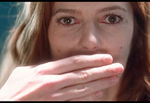

<!doctype html>

<head>
<meta charset="UTF-8">
<title>leaflet example simple map</title>
	<link rel="stylesheet" href="https://unpkg.com/leaflet@1.9.4/dist/leaflet.css"
   />
	<style>
    /* CSS to add scroll to Leaflet pop-up content */
    .leaflet-popup-content {
      max-height: 600px; /* Set a maximum height for the content */
      overflow-y: auto; /* Enable vertical scroll if content exceeds the maximum height */
	  background-color: #f2f2f2; /* Customize the background color */
      color: #333; /* Customize the text color */
      padding: 10px; /* Add padding for better appearance */
    }
  </style>
	

 
	
</head>

<body>
	
		<div id="map" style="height: 600px; margin:5rem auto;"></div>
 

		<!--#map {height: 180px;}-->
 <!-- Make sure you put this AFTER Leaflet's CSS -->
	<script src="https://unpkg.com/leaflet@1.9.4/dist/leaflet.js">
     </script>
	
	
			
 <script>
	//var map = L.map('map').setView([51.505, -0.09], 13);
	 var map = L.map('map').setView([30, 0], 2.5);
	L.tileLayer('https://tile.openstreetmap.org/{z}/{x}/{y}.png', {
    maxZoom: 19,
    attribution: '&copy; <a href="http://www.openstreetmap.org/copyright">OpenStreetMap</a>'
}).addTo(map);
	 

// Add popup message
let template = `

<h3>Fieldwork in Bjäresjö Church, Skåne, Sweden</h3>
<div>
</br>
<a href="https://www.utm.utoronto.ca/dvs/people/harriet-sonne-de-torrens" target='_blank'>Visit Dr. Harriet M. Sonne de Torrens's profile</a>
 </div>
`
// Add popup message
let template1 = `

<h3>Fieldwork in Paris</h3>
<div>

<p>French cinema, French philosophy</br>
 
<a href="https://www.utm.utoronto.ca/dvs/people/brian-price" target='_blank'>Visit Dr. Brian Price's profile</a>
    </p>

<h3>Lectures, exhibitions, conferences, workshops</h3>


<p>
Institution: Université Paris 1 Panthéon-Sorbonne</br>
Event title: Demoseries, Lecture</br>
Title of project: Lecture:  “After the Political, Aesthetic Affiliation”</br>
<a href="https://www.utm.utoronto.ca/dvs/people/brian-price" target='_blank'>Visit Dr. Brian Price's profile</a>
    </p>


</div>

`
// Add popup message
let template2 = `

<h3>Lectures, exhibitions, conferences, workshops in Frankfurt</h3>
<div>

<p>
Institution: Goethe-Universität Frankfurt am Main</br>
Event title: Lecture</br>
Title of project: Lecture:  “After the Political, Aesthetic Affiliation”</br>
<a href="https://www.utm.utoronto.ca/dvs/people/brian-price" target='_blank'>Visit Dr. Brian Price's profile</a>
    </p>
 </div>
`
// Add popup message
let template3 = `

<h3>Fieldwork in Marseille</h3>
<div>

<p>French cinema, French philosophy</br>
 
<a href="https://www.utm.utoronto.ca/dvs/people/brian-price" target='_blank'>Visit Dr. Brian Price's profile</a>
    </p>
</div>
`
// Add popup message
let template4 = `

<h3>Fieldwork in Los Angeles</br>
 <div>

<p>The Margaret Herrick Library <br/>
Production Code</br>
 
<a href="https://www.utm.utoronto.ca/dvs/people/brian-price" target='_blank'>Visit Dr. Brian Price's profile</a>
    </p>
</div>
`

	 
// Add popup message
let template5 = `

<h3>Lectures, exhibitions, conferences, workshops in Cambridge, England</h3>
<div>

<p>
Institution: University of Cambridge</br>
Event title: Colloquium on Christophe Honoré</br>
Title of project: Lecture: “How We Don’t Know About Each Other: Cavell and Honoré”</br>
<a href="https://www.utm.utoronto.ca/dvs/people/brian-price" target='_blank'>Visit Dr. Brian Price's profile</a>
    </p>
 </div>
`

// Add popup message
let template6 = `

 <h3>Lectures, exhibitions, conferences, workshops in Amsterdam</h3>
<div>

<p>
Institution: University of Amsterdam</br>
Event title: Lecture</br>
Title of project: Lecture: “After the Political, Aesthetic Affiliation”</br>
<a href="https://www.utm.utoronto.ca/dvs/people/brian-price" target='_blank'>Visit Dr. Brian Price's profile</a>
    </p>
 </div>
`


// Add popup message
let template7 = `

<h3>Fieldwork in Ribe Cathedral, Denmark</h3>
<div>
</br>
 
<a href="https://www.utm.utoronto.ca/dvs/people/harriet-sonne-de-torrens" target='_blank'>Visit Dr. Harriet M. Sonne de Torrens's profile</a>
 </div>
`

// Add popup message
let template8 = `

<h3>Fieldwork in Lucknow, India</h3>
 
 <div>

</br>Various public parks and gardens, including the Manyawar Shri Kanshi Ram Ji Green Eco Garden, Janeshwar Mishra Park, Gomti Riverfront Park, Begum Hazrat Mahal Park, National Botanical Research Institute, etc</br>
Part of the SSHRC funded project, Inorganic Nature and Public Space in Post-Liberalization India. Lucknow, the capital city of Uttar Pradesh, the most populous state in India, is famous as a city of gardens. This tradition continues as each new political regime asserts its presence through new public parks. My research in Lucknow examines the ways in which these contemporary spaces of urban nature, which often use a global language of ecology, are deployed towards political projects. Relating these contemporary practices to Mughal, nawabi, and colonial practices of making gardens, I analyze Lucknow’s parks as sites of encounters between these vernacular genealogies and globally circulating ideologies of “nature”.</br>
 

<p>

</br>Royal Impex, manufacturer of equipment for parks (e.g. slides, dustbins)</br>
As part of my project on vernacular significations of “nature” in contemporary India, I am investigating the appearance of animal and tree shaped dustbins across public parks. To understand the material aspects of this form, its patronage, and its (perceived) appeal, I hope to visit manufacturers of these dustbins working at various scales in different parts of India.</br>
<p>

<h3>Lectures, exhibitions, conferences, workshops in Lucknow, India</h3>
 
Giri Institute of Development Studies</br>
TBD, symposium on the history of Lucknow's monuments and urban aesthetics, in collaboration with local academics and historians of the city</br>
TBD, presentation on the contribution of Dalit Chief Minister Kumari Mayawati to shaping the spaces of the city
</p>
 
 <a href="https://www.utm.utoronto.ca/dvs/www.utm.utoronto.ca/dvs/people/kajri-jain" target='_blank'>Visit Dr. Kajri Jain's profile</a>
 
  
</div>
`

// Add popup message
let template9 = `

<h3>Fieldwork in Arambram, Kozhikode District, Kerala, India</h3>
<div>

</br>VMK Botanical Garden (featuring trees from world and regional literature)
</br>My interest in visiting this garden is to examine the connections between the literary imagination and its materialization in the “nature theme park” form. Specifically, I am interested in the assemblage between the “classical” Sanskrit traditions (as understood today), European Romanticism, Malayalam modernism (which engages with post-Romantic modernist traditions and communism), and global environmentalism.</br>
 <a href="https://www.utm.utoronto.ca/dvs/www.utm.utoronto.ca/dvs/people/kajri-jain" target='_blank'>Visit Dr. Kajri Jain's profile</a>
 </div>
 
`

// Add popup message
let template10 = `

<h3>Fieldwork in Washington, DC</h3>
<div>

 
</br>National Museum of Asian Art, Arthur M. Sackler Gallery</br>
Visit to the exhibition “A Splendid Land: Paintings from Royal Udaipur,” along with discussions with the curator, Dipti Khera (art historian at NYU) and other invited visitors to the show (including the modernist artists Gulammohammed and Nilima Sheikh, Columbia historian Manan Ahmed, Bryn Mawr art historian Sylvia Houghteling, Met conservator Marina Ruiz-Molina). These paintings from a 18th-20th century courtly context, overlapping with British colonialism in India, are a marvellous microcosm, albeit from an earlier period, of the kinds of encounters and exchanges between vernacular and post-Romantic constructions and significations of “nature” that interest me in my current project.
</br>
<a href="https://www.utm.utoronto.ca/dvs/people/kajri-jain" target='_blank'>Visit Dr. Kajri Jain's profile</a>
 </div>
`
	// Add popup message
let template11 = `

<h3>Lectures, exhibitions, conferences, workshops in University of Turin</h3>
<div>

 
 
</br>University of Turin, Department of Culture, Politics, and Society</br>
ToIndia Summer School 2023, “Politics, Development and Social Change in Contemporary India: India Silenced. Censorship, Repression, Dissent”.</br>
“Before and After the Deluge: The Production of Nature at Ekta Nagar” (invited talk)
</br>

<a href="https://www.utm.utoronto.ca/dvs/people/kajri-jain" target='_blank'>Visit Dr. Kajri Jain's profile</a>
 </div>
`
	 


	 
		// Add popup message
let template13 = `

<h3>Fieldwork in Singapore</h3>
 <div>

</br>Asian Film Archive and Objectifs <br/>
My book manuscript, "Luminous Flesh: The Visible and Invisible Worlds of Contemporary Chinese Cinemas," which examines the haunted sites and transmedia possibilities of trans-Chinese cinemas that reveal the fictionality of Chineseness as ethnic, ideological, linguistic, or national affiliation in post-2010 diasporic cinemas of Singapore, Malaysia, Taiwan and Hong Kong.</br>
 
<a href="https://www.utm.utoronto.ca/dvs/people/elizabeth-wijaya" target='_blank'>Visit Dr. Elizabeth Wijaya's profile</a>
    </p>

</div>
`
	
		// Add popup message
let template14 = `

<h3>Fieldwork in Taipei</h3>

<div>

</br>Taiwan New Cinema, cinema of Tsai Ming-liang as well as contemporary films in Taiwan by diasporic filmmakers such as Chiang Wei Liang. Dr. Elizabeth Wijaya is the Co-Producer for Chiang Wei Liang’s Mongrelv, shot on location in Taiwan in Spring 2023</br>
 
<a href="https://www.utm.utoronto.ca/dvs/people/elizabeth-wijaya" target='_blank'>Visit Dr. Elizabeth Wijaya's profile</a>
    </p>

</div>
 
`
// Add popup message
let template15 = `

<h3>Fieldwork in Bangkok</h3>

<div>

</br>Bangkok is an important site for my research on Southeast Asian cinema activities, production and post-production.</br>
 
<a href="https://www.utm.utoronto.ca/dvs/people/elizabeth-wijaya" target='_blank'>Visit Dr. Elizabeth Wijaya's profile</a>
    

</div>
 
`

// Add popup message
let template16 = `

<h3>Fieldwork in Ho Chi Minh City,Veitnam</h3>
<div>

</br>Dr. Elizabeth Wijaya is the Co-Producer of Taste (2021) by Le Bao and Viet and Nam by Truong Minh Quy (in production)</br>
 
<a href="https://www.utm.utoronto.ca/dvs/people/elizabeth-wijaya" target='_blank'>Visit Dr. Elizabeth Wijaya's profile</a>
    

</div>
`


// Add popup message
let template17 = `

<h3>Fieldwork in Ann Arbor, Michigan</h3>

<p>
    
<p>Frankel Institute for Advanced Jewish Studies, University of Michigan.</br>“Jewish Photographic Humour in Dark Times: Visual First Responders to the Third Reich” in conjunction with the Frankel Institute’s 2023-2024 theme, “Jewish Visual Cultures.”  </br>
 
<a href="https://www.utm.utoronto.ca/dvs/people/louis-kaplan" target='_blank'>Visit Dr. Louis Kaplan's profile</a></p>
</div>

`


// Add popup message
let template18 = `


<h3>Fieldwork in New York</h3>

<div>
</br>
Vera List Center for Art and Politics, New School. Artist Book publication with Inventory Press</br>
 
<a href="https://www.utm.utoronto.ca/dvs/people/maria-hupfield" target='_blank'>Visit Dr. Maria Hupfield's profile</a>
   

<p>
    
</br>YIVO Institute for Jewish Research, Center for Jewish History</br>
 
<a href="https://www.utm.utoronto.ca/dvs/people/louis-kaplan" target='_blank'>Visit Dr. Louis Kaplan's profile</a>

</p>
</div>

`

// Add popup message
let template19 = `

<h3>Fieldwork in Los Angeles</h3>
<div>

<p>Getty Library focussing on Russian-Jewish émigré art historian Leo Steinberg and Hungarian-Jewish émigré photography editor, Stefan Lorant work.</br>
 
<a href="https://www.utm.utoronto.ca/dvs/people/louis-kaplan" target='_blank'>Visit Dr. Louis Kaplan's profile</a>

</p>
</div>
`
	 
// Add popup message
let template21 = `

<h3>Fieldwork in Maine NY</h3>


 
<p>Surf Point Foundation</br>Artist Residency July 2023</br>
 
<a href="https://www.utm.utoronto.ca/dvs/people/maria-hupfield" target='_blank'>Visit Dr. Maria Hupfield's profile</a>


`

// Add popup message
let template22 = `

 

<h3>Fieldwork in Saratoga</h3>

<div>
</br>
Montalvo Arts Foundation </br>
 
<a href="https://www.utm.utoronto.ca/dvs/people/maria-hupfield" target='_blank'>Visit Dr. Maria Hupfield's profile</a>
   

<p>
    
</br>YIVO Institute for Jewish Research, Center for Jewish History</br>
 
<a href="https://www.utm.utoronto.ca/dvs/people/louis-kaplan" target='_blank'>Visit Dr. Louis Kaplan's profile</a>

</p>
</div>

`
// Add popup message
let template23 = `
 


<h3> Lectures, exhibitions, conferences, workshops in Montreal PQ </h3>

<div>
</br>
Galerie Hughes Charbonneau </br>
Snip, Cut, Stitch, Slice
</br>
 
<a href="https://www.utm.utoronto.ca/dvs/people/maria-hupfield" target='_blank'>Visit Dr. Maria Hupfield's profile</a>
   

<p>
    
</br> MMFA and CIECO 
</br>Jingle Spiral Artist Talk and Performance </br>
 
<a href="https://www.utm.utoronto.ca/dvs/people/maria-hupfield" target='_blank'>Visit Dr. Maria Hupfield's profile</a>

</p>
</div>
`

// Add popup message
let template24 = `
<h3> Lectures, exhibitions, conferences, workshops in Arizona NM USA</h3>
<div>

</br> Exhibition </br> Crafting Resistance
</br>

<a href="https://www.utm.utoronto.ca/dvs/people/maria-hupfield" target='_blank'>Visit Dr. Maria Hupfield's profile</a>
 </div>
`
	 	 	// Add popup message
let template25 = `

<h3> Lectures, exhibitions, conferences, workshops in Annadale on Hudson NY USA</br>


<div>
</br>
Hessel Museum, CCS Bard, Exhibition </br>
Indian Theatre </br>
 
<a href="https://www.utm.utoronto.ca/dvs/people/maria-hupfield" target='_blank'>Visit Dr. Maria Hupfield's profile</a>
   </div>
`
	
	 	 	// Add popup message
let template26 = `

<h3>Fieldwork in Toronto</h3>

<div>
 
</br>Urban Forestry team, City of Toronto</br>Inaugural Artist in Residency 2023-24</br>
 
<a href="https://www.utm.utoronto.ca/dvs/people/maria-hupfield" target='_blank'>Visit Dr. Maria Hupfield's profile</a>
   

<p>

  </br>
TIFF Bell Lightbox, viewing films related to my courses, especially new Canadian films and political films from throughout film history.
</br></br>

  </br>
Fox Theatre, open since 1914. An invaluable resource for seeing contemporary and classic cinema on the big screen.</br></br>

 </br>
Cinémathèque Française. One of the great film museums in world, with access to virtually everything I’ve ever needed to read on the art of cinema.</br>
 
<a href="https://www.utm.utoronto.ca/dvs/people/matthew-stoddard" target='_blank'>Visit Dr. Matthew Stoddard's profile</a>

   </p>

</div>

<h3> Lectures, exhibitions, conferences, workshops in Toronto</h3>

<div>
 
</br> University of Toronto
, Conference </br> Miikaans Indigenous Mobile Movement Lab, Mapping Powwow and Kin-making as Choreographies for Finding Life’s Trails
</br>
 
<a href="https://www.utm.utoronto.ca/dvs/people/maria-hupfield" target='_blank'>Visit Dr. Maria Hupfield's profile</a>
</div>

`
// Add popup message
let template27 = `

<h3>Fieldwork in Stånga, Gotland</h3>
<div>
 
 
<p>
<h3>Lectures, exhibitions, conferences, workshops in Visby, Gotland</h3>
<div>
 </br>
<a href="https://www.utm.utoronto.ca/dvs/people/harriet-sonne-de-torrens" target='_blank'>Visit Dr. Harriet M. Sonne de Torrens's profile</a>
 </div>
`
// Add popup message
let template28 = `

<h3>Fieldwork in Germany</h3>
<div>
 </br>
<a href="https://www.utm.utoronto.ca/dvs/people/harriet-sonne-de-torrens" target='_blank'>Visit Dr. Harriet M. Sonne de Torrens's profile</a>
 </div>
`


	

const marker = L.marker([55.462599126101374, 13.749806880955454]).addTo(map);
	 marker.bindPopup(template);
	 
	 const marker1 = L.marker([48.856566545396475, 2.343941957962182]).addTo(map);
	 marker1.bindPopup(template1);
	 
	 const marker2 = L.marker([50.10964691786252, 8.653031134478619]).addTo(map);
	 marker2.bindPopup(template2);
	 
	 const marker3 = L.marker([43.29691657607924, 5.343480769690766]).addTo(map);
	 marker3.bindPopup(template3);
	 
	  const marker4 = L.marker([34.05304008549797, -118.30604655204266]).addTo(map);
	 marker4.bindPopup(template4);
	 
	   const marker5 = L.marker([52.1961511488704, 0.118453794664999221]).addTo(map);
	 marker5.bindPopup(template5);
	 
 const marker6 = L.marker([52.36728464195003, 4.8432448497603025]).addTo(map);
	 marker6.bindPopup(template6);
	 
		 
	 const marker7 = L.marker([55.328256763766895, 8.7612928394543635]).addTo(map);
	 marker7.bindPopup(template7);
	 
	 const marker8 = L.marker([26.863905, 80.902802]).addTo(map);
	 marker8.bindPopup(template8);
	 
	 
	  const marker9 = L.marker([11.339656608452751, 75.88828682163974]).addTo(map);
	 marker9.bindPopup(template9);
	 
	 const marker10 = L.marker([38.90735206312972, -77.05440476364056]).addTo(map);
	 marker10.bindPopup(template10);
	
	const marker11 = L.marker([45.069774006216065, 7.689040968108419]).addTo(map);
	 marker11.bindPopup(template11);
	
	 //const marker12 = L.marker([26.90206451787649, 80.95206373329053]).addTo(map);
	 //marker12.bindPopup(template12);
	
	  const marker13 = L.marker([1.3593009196698513, 103.84080026273182]).addTo(map);
	 marker13.bindPopup(template13);
	 
	   const marker14 = L.marker([25.046752519641824, 121.55599273677552]).addTo(map);
	 marker14.bindPopup(template14);
	 
	   const marker15 = L.marker([13.772403102472682, 100.4902226911708]).addTo(map);
	 marker15.bindPopup(template15);
	 
	   const marker16 = L.marker([10.809929146842508, 106.59765750912598]).addTo(map);
	 marker16.bindPopup(template16);

	   const marker17 = L.marker([42.28135911103212, -83.74587280300489]).addTo(map);
	 marker17.bindPopup(template17);
	 
	   const marker18 = L.marker([40.71679897147022, -74.04015735481244]).addTo(map);
	 marker18.bindPopup(template18);
	 
 const marker19 = L.marker([34.07705875777055, -118.4755062035066]).addTo(map);
	 marker19.bindPopup(template19);
	 
	  
	   const marker21 = L.marker([42.19320949861241, -76.06107906540329]).addTo(map);
	 marker21.bindPopup(template21);
	 

  const marker22 = L.marker([37.27206318539228, -122.02041305128753]).addTo(map);
	 marker22.bindPopup(template22);
	 
  const marker23 = L.marker([45.505192065264794, -73.59446898009742]).addTo(map);
	 marker23.bindPopup(template23);
	 
  const marker24 = L.marker([36.733135439088734, -107.96233318761074]).addTo(map);
	 marker24.bindPopup(template24);
	 
	 
	 	 
  const marker25 = L.marker([42.0218471541287, -73.91270403213208]).addTo(map);
	 marker25.bindPopup(template25);
	 
	 
	   const marker26 = L.marker([43.64671430453548, -79.390523589628]).addTo(map);
	 marker26.bindPopup(template26);
	 
	  const marker27 = L.marker([57.28071948482164, 18.47038340888624]).addTo(map);
	 marker27.bindPopup(template27);
	 
	   const marker28 = L.marker([51.27098308041074, 9.360180058038132]).addTo(map);
	 marker28.bindPopup(template28);
	 
	
	 
	</script>

</body>
	</html>

